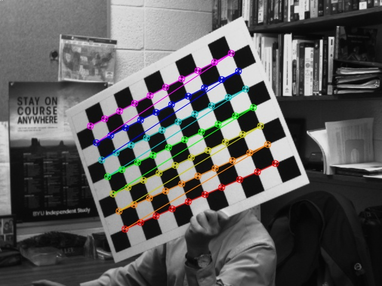
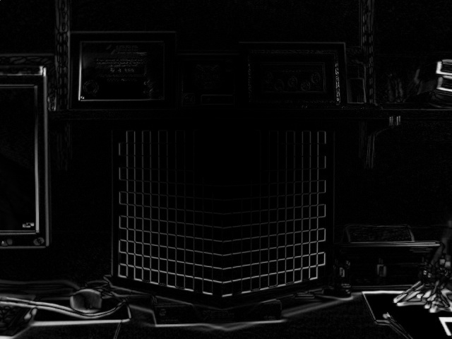
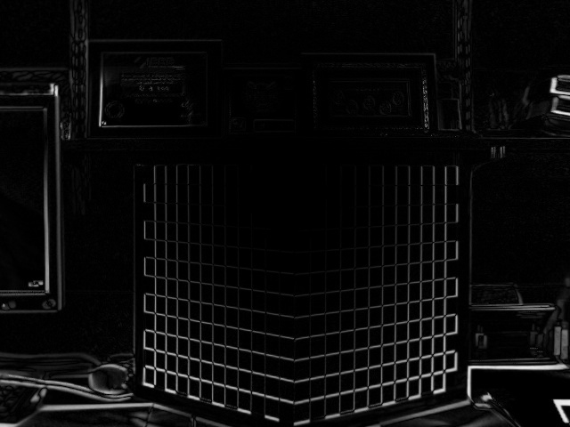

The following is the result given from my code written for corner detection.

The following are the intrinsic and distortion parameters computed from the images provided.
intrinsic_params =
[1145.223455665104, 0, 328.945216696177;
0, 1143.600007277263, 222.1597641571362;
0, 0, 1]
distortion_params =
[-0.2575507934862325;
0.04884197280891184;
-0.001409751152446753;
-0.001543707631160005;
0.9076529637760357]
The following images are distortion corrected from the intrinsic parameters computed in Task 2.


The following are the rotation and translation matricies for the object data provided.
rotation =
[0.7354706625150564, -0.6774298093547906, 0.01310564676756049;
-0.003190169014756383, -0.02280449923942213, -0.9997348536667592;
0.6775490590365552, 0.7352338459374481, -0.01893315575141785]
translation =
[-0.02466089907017876;
10.48750338023632;
46.67923546700356]
The following are the intrinsic and distortion parameters using my personal webcam.
intrinsic_params =
[957.6129263627653, 0, 409.749409549764;
0, 953.5666607530868, 282.6446950085418;
0, 0, 1]
distortion_params =
[-0.1271090608365228;
0.2924936363105562;
0.0051567508076029;
-0.05116578986005205;
-1.617042692213017]
The following is an image captured, corrected for distortion, and diffed against the original.